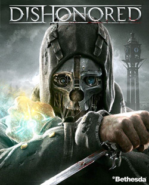

Divinity: Original Sin 2, Visage, World of Warcraft, Hollow Knight, VA-11 HALL-A, Devil May Cry 5, Call of Duty: MW2, Need for Speed:MW, StarCraft 2, Dishonored
 Divinity: OS2 — партийная компьютерная ролевая игра, разработанная компанией Larian Studios.В начале игры для своего персонажа нужно выбрать одну из 5 рас (человек, эльф, нежить, ящер, гном). Далее, нужно выбрать характер персонажа. Выбор расы и характера будет влиять на игровой процесс (диалоги с многими NPC), а также на отношения со спутниками, которые будут в вашей группе. Имеется возможность выбрать уже готового персонажа (одного из спутников).
Divinity: OS2 — партийная компьютерная ролевая игра, разработанная компанией Larian Studios.В начале игры для своего персонажа нужно выбрать одну из 5 рас (человек, эльф, нежить, ящер, гном). Далее, нужно выбрать характер персонажа. Выбор расы и характера будет влиять на игровой процесс (диалоги с многими NPC), а также на отношения со спутниками, которые будут в вашей группе. Имеется возможность выбрать уже готового персонажа (одного из спутников).
Visage — Психологический хоррор, разработанный компанией SadSquare Studio, вдохновлялась отмененным проектом P.T. и имеет схожие с ним геймплейные механики. Игра начинается в доме с странным размещением комнат и загадочной историей, в которой главный герой под управлением игрока изучает историюдома и тех кто в нем жил.
 World of Warcraft — массовая многопользовательская ролевая онлайн-игра, разработанная и издаваемая компанией Blizzard Entertainment. Действие World of Warcraft происходит в фэнтезийной вселенной Warcraft. Игра тесно связана с предыдущими играми серии — стратегиями в реальном времени; каждый игрок управляет одним персонажем и может взаимодействовать с другими игроками в общем виртуальном мире. Игра была анонсирована в 2001 году и выпущена 23 ноября 2004 года. В 2008 году книга рекордов Гиннесса назвала WoW самой популярной MMORPG в мире.
World of Warcraft — массовая многопользовательская ролевая онлайн-игра, разработанная и издаваемая компанией Blizzard Entertainment. Действие World of Warcraft происходит в фэнтезийной вселенной Warcraft. Игра тесно связана с предыдущими играми серии — стратегиями в реальном времени; каждый игрок управляет одним персонажем и может взаимодействовать с другими игроками в общем виртуальном мире. Игра была анонсирована в 2001 году и выпущена 23 ноября 2004 года. В 2008 году книга рекордов Гиннесса назвала WoW самой популярной MMORPG в мире.

Hollow Knight — компьютерная игра в жпнре метроидвания, выпущенная инди-студией Team Cherry в 2017 году. Игра рассказывает о приключениях и открытиях безымянного рыцаря в давно заброшенном королевстве насекомых Hallownest. Некоторые критики назвали игру одной из самых атмосферных и качественных метроидваний, а также классикой жанра.
VA-11 HALL-A: Cyberpunk Bartender Action — компьютерная игра в жанре симулятора бармена с элементами визуального романа, разработанная венесуэльской командой разработчиков Sukeban Games и изданная Ysbryd Games. Выпуск игры состоялся 21 июня 2016 года. Задачей игрока является приготовление для посетителей бара алкогольных напитков и заработок игровой валюты, которую впоследствии может потратить, например, для украшения дома.

Devil May Cry 5 — компьютерная игра в жанре слэшер, разработанная и изданная японской компанией Capcom. Пятая игра основной оригинальной серии Devil May Cry и шестая часть франшизы. Игра была анонсирована в июне 2018 года на конференции E3 2018. Выход игры состоялся 8 марта 2019 года.
 Call of Duty: Modern Warfare 2 — мультиплатформенная компьютерная игра, в жанре шутера от первого лица, разработанная американской компанией Infinity Ward и изданная Activision. Игра является шестой в серии Call of Duty. Выход игры состоялся 10 ноября 2009 года. В России весь тираж игры для консолей был задержан из-за ставшей скандально известной вырезанной миссии «Ни слова по-русски», и игра вышла только на персональном компьютере.
Call of Duty: Modern Warfare 2 — мультиплатформенная компьютерная игра, в жанре шутера от первого лица, разработанная американской компанией Infinity Ward и изданная Activision. Игра является шестой в серии Call of Duty. Выход игры состоялся 10 ноября 2009 года. В России весь тираж игры для консолей был задержан из-за ставшей скандально известной вырезанной миссии «Ни слова по-русски», и игра вышла только на персональном компьютере.

Need for Speed: Most Wanted — компьютерная игра серии Need for Speed в жанре аркадной автогонки, разработанная студией EA Canada и изданная компанией Electronic Arts для консолей, персональных компьютеров и мобильных телефонов в 2005 году. Действия игры происходят в вымышленном городе Рокпорт, в котором игроку предоставлена свобода передвижения. По сюжету главный герой выигрывает гонки и продвигается вверх по «Чёрному списку» гонщиков, чтобы вернуть свой автомобиль BMW M3 GTR, отвоёванный Рэйзором обманным путём. Need for Speed: Most Wanted сочетает в себе уличные гонки, а также тюнинг автомобилей с оптимизацией настроек и полномасштабные полицейские преследования. Для продвижения по сюжету игрок должен выигрывать гонки «Чёрного списка» и уходить от полицейских преследований, за что зарабатывает очки, тем самым набирая рейтинг среди других гонщиков «Чёрного списка».
 StarCraft 2: Wings of Liberty — компьютерная игра в жанре стратегии в реальном времени, продолжение StarCraft. Была анонсирована 19 мая 2007 года на фестивале Blizzard Worldwide Invitational в Сеуле, Южная Корея. StarCraft II выполнен в трёхмерной графике, а также использует физический движок Havok. Изначально была задумана одна игра, но на выставке BlizzCon 2008 объявлено, что StarCraft II станет трилогией. Первая часть получила название StarCraft II: Wings of Liberty, а два дополнения — Heart of the Swarm и Legacy of the Void. Выпуск StarCraft II: Wings of Liberty состоялся 27 июля 2010 года.
StarCraft 2: Wings of Liberty — компьютерная игра в жанре стратегии в реальном времени, продолжение StarCraft. Была анонсирована 19 мая 2007 года на фестивале Blizzard Worldwide Invitational в Сеуле, Южная Корея. StarCraft II выполнен в трёхмерной графике, а также использует физический движок Havok. Изначально была задумана одна игра, но на выставке BlizzCon 2008 объявлено, что StarCraft II станет трилогией. Первая часть получила название StarCraft II: Wings of Liberty, а два дополнения — Heart of the Swarm и Legacy of the Void. Выпуск StarCraft II: Wings of Liberty состоялся 27 июля 2010 года.

Dishonored — компьютерная игра в жанре стелс-экшен от первого лица с элементами RPG, разработанная французской компанией Arkane Studios и изданная Bethesda Softworks в 2012 году. Действие игры происходит в охваченном эпидемией чумы вымышленном городе Дануолл прообразом которого послужил Лондон времён Викторианской эпохи. Главный герой игры, лорд-защитник Корво Аттано, после обвинения в убийстве императрицы и побега из тюрьмы пытается отомстить своим врагам.
Наверх